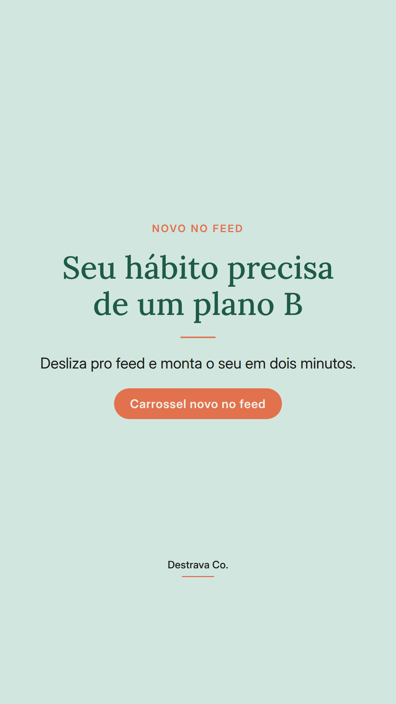
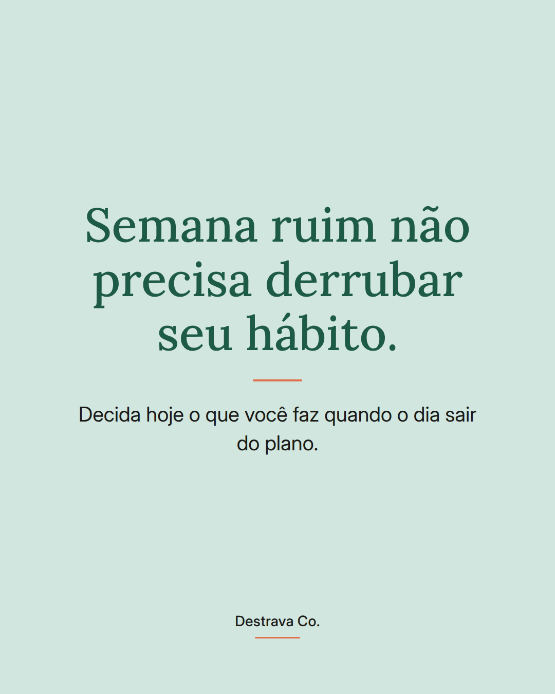
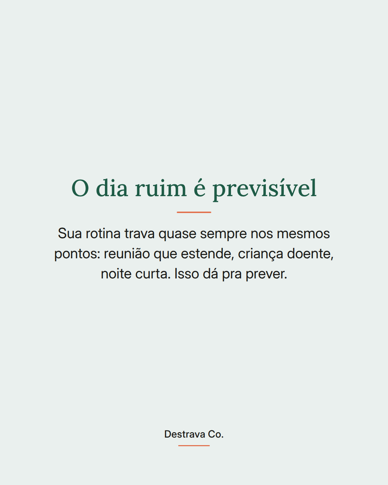
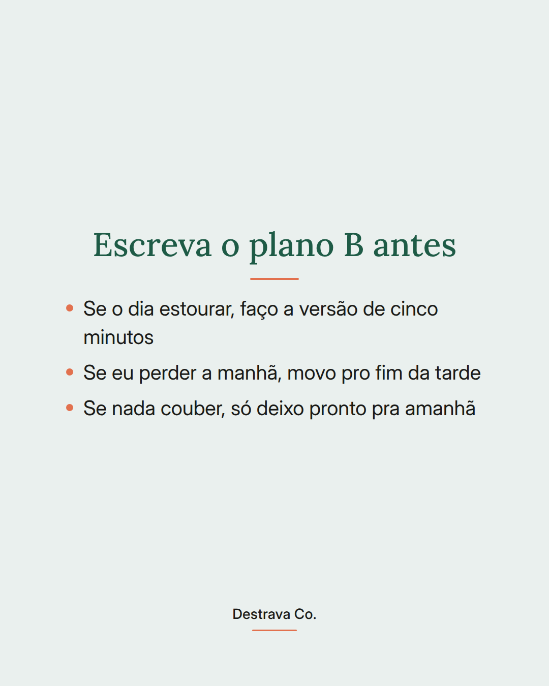
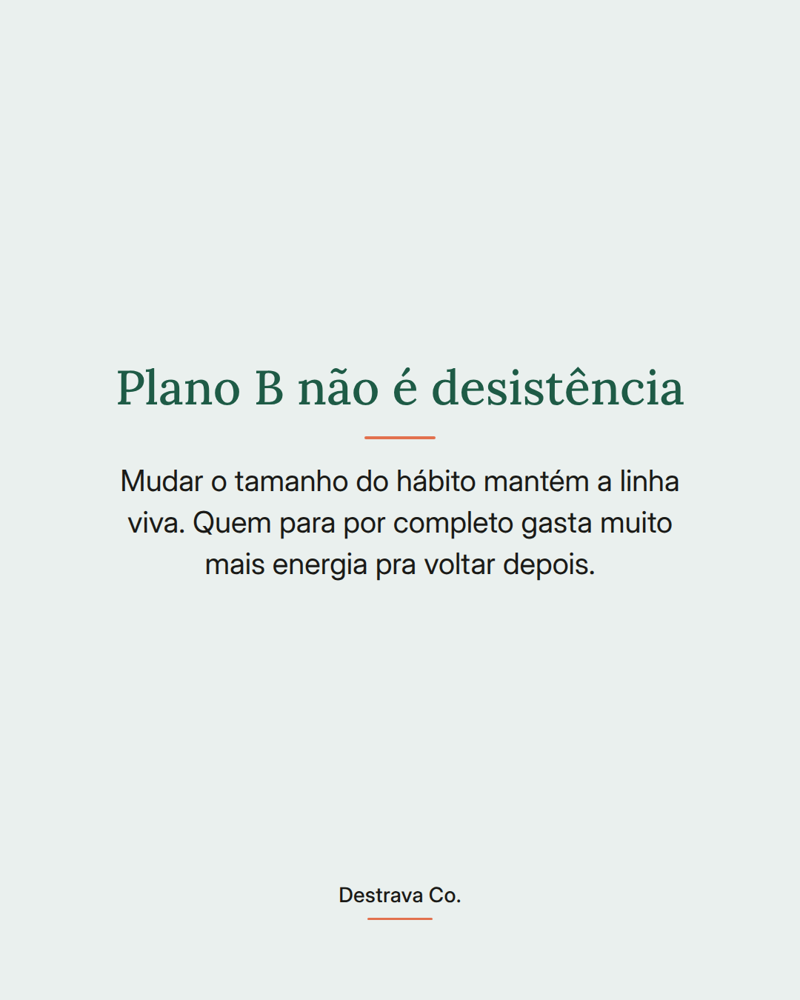
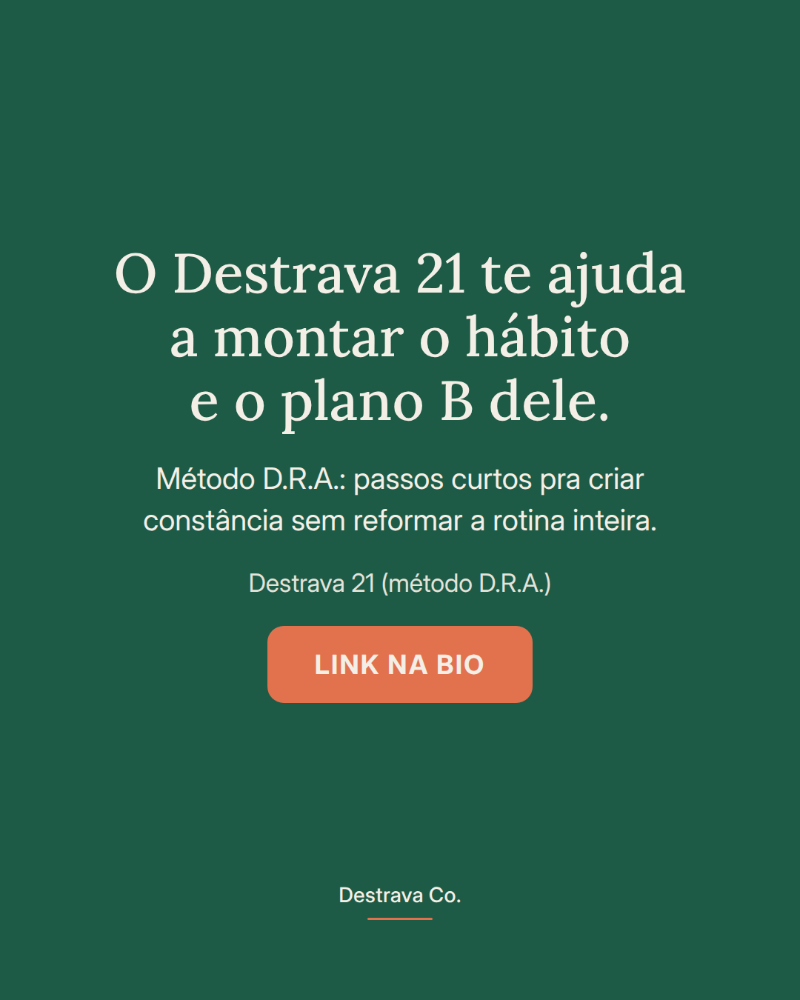

Hábito que só funciona em semana boa não é hábito, é sorte.
A rotina corrida trava quase sempre nos mesmos pontos: a reunião que estende, a noite curta, a criança que adoece. Como isso é previsível, dá pra decidir antes o que acontece com o seu hábito nesses dias.
Escolha agora a versão reduzida: cinco minutos, outro horário, ou só deixar tudo pronto pra amanhã. Decidir no meio do caos quase sempre vira abandono, e voltar do zero custa muito mais energia do que seguir pela metade.
Plano B não é desistir. É o que mantém a linha viva até a semana acalmar.
Salva pra consultar no próximo dia caótico e manda pra uma amiga que anda se cobrando demais. Se quiser montar isso com método, o Destrava 21 te espera no meu perfil.